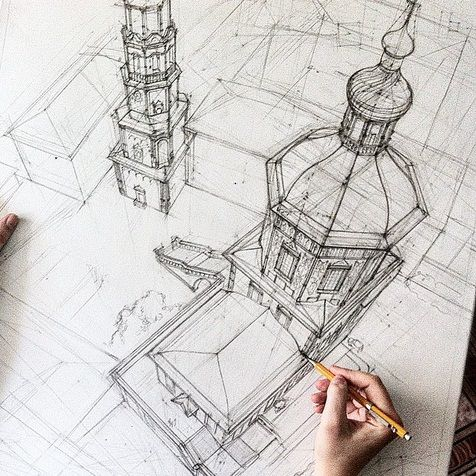
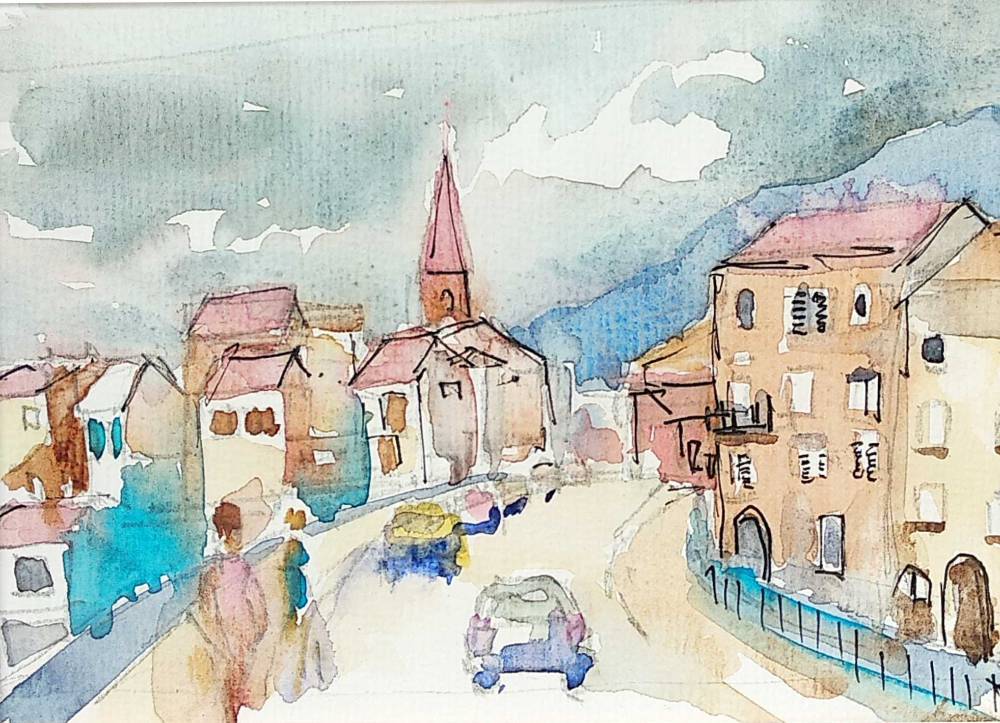
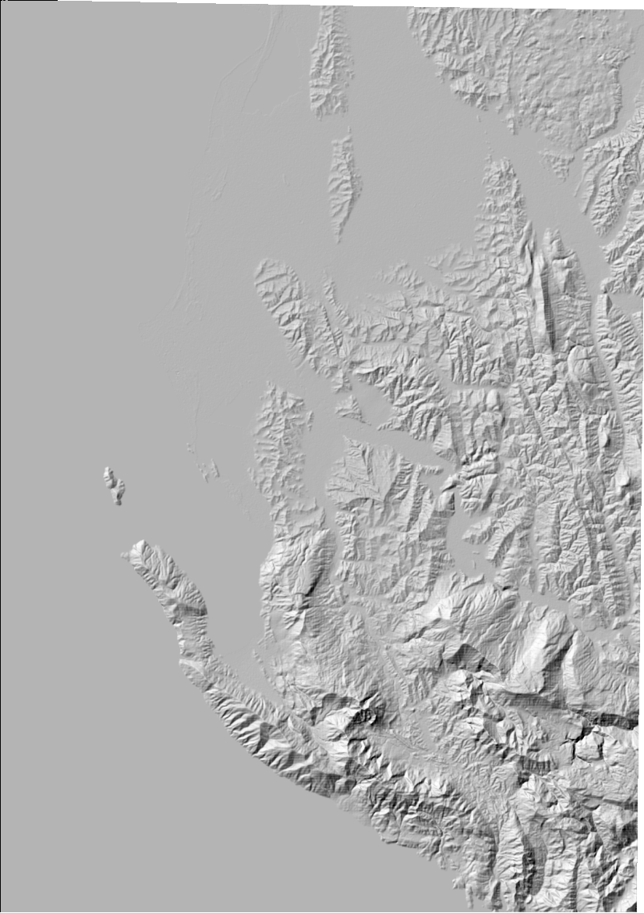
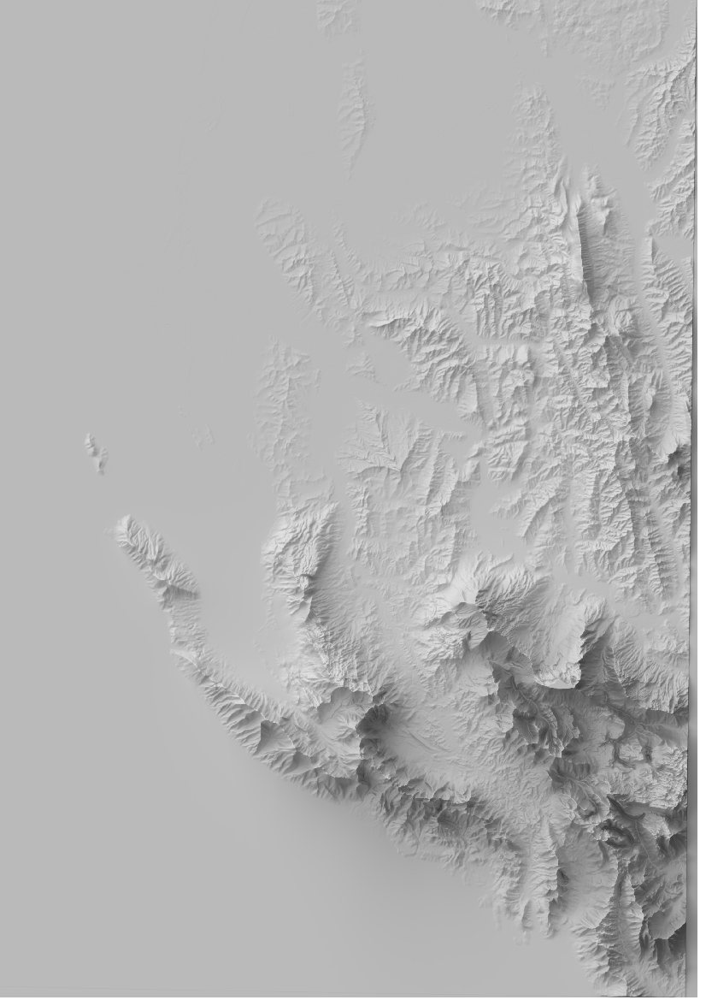

Masterstroke; A very skillful and oportune act
The starting point is the skill, the ability to produce something technically brilliant.
Many people have this sort of technical ability but will never be able to produce their own master stokes
Its the oportune part that really defines the masterstoke. Its about knowing the exact moment or cricumstance to
deploy your skill. Its the extra brush stroke on exactly the right place on the canvas. Its the final note in a
chorus at exactly the right moment
Technical skill is easy, the wisdom to know when to use it is what makes the master stroke the masterstroke


talk about traditianal ways of generating hillshades and how blender does it. make comparison. Old ways =
architectural drawing, sharpish. Blender = Masterstroke from a painter
What is a
Shaded Relief
Short answer: Shadows
Long answer: There is no more important component of a map than the shaded relief. > Tom Patterson


According to Leland Brown the first one looks like wrinkled tinfoil, sharp(remention sharpish look) edges
Steps to awesome
PrepPlaneCameraSunFinal AdjustmentsThoughts, link to
axis maps
Camera
Position
Rotation - 0 45 135 - explain why
Render dimensions - the same px values as dem - {explain % meaning }
Set Orthographic View
Set Orthographic Scale - double the largest dimension of dem
Lamp type - sun
Rotation - 0 45 135
Sun size{1} - Use nodes - sun strenth{3}
Final Adjustements
Node editor{Add - Converter -Math} - Multiply
Render settings - Samples{300 final render}
Tick on Denoising
Light Paths - Limited Global Illumination